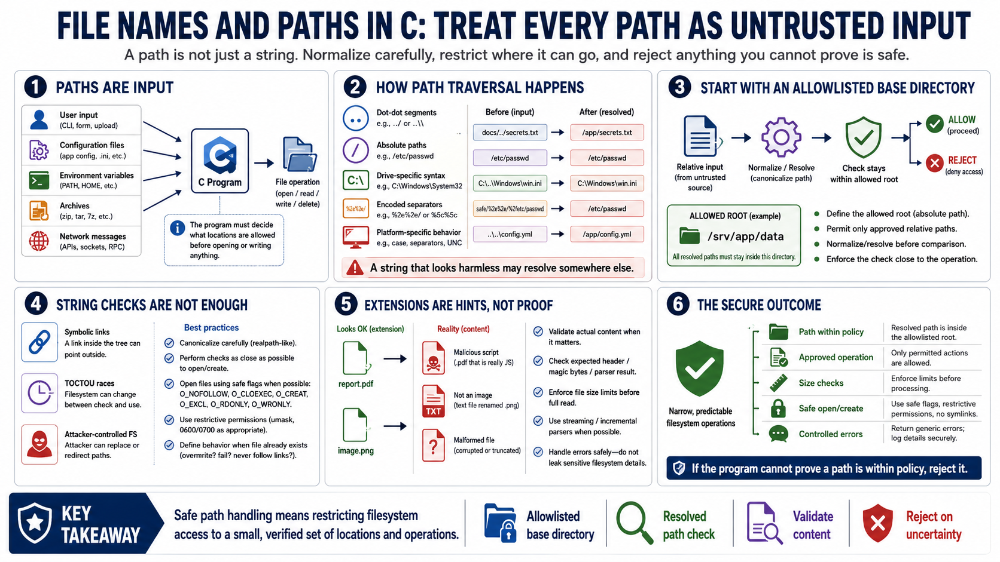

File and Path Input
Connecting to LMS... Progress: in progress

Narration
File names and paths are input, even when they look like ordinary strings. If a user, configuration file, environment variable, archive, or network message can influence a path, the program must decide what locations are allowed before opening or writing anything. Path traversal occurs when input can move access outside the intended directory, often through dot-dot segments, absolute paths, drive-specific syntax, encoded separators, or platform-specific path behavior. A path that looks harmless before normalization may resolve somewhere else after the operating system interprets it.
A strong path handling design starts with an allowlisted base directory and a clear rule for relative input. Canonicalization can help compare the resolved path to the allowed root, but it must be used carefully and close to the operation. Symbolic links and time-of-check to time-of-use races can matter when attackers can modify the filesystem. Avoid treating a string check as the whole security decision. If the program needs to create files, consider safe creation flags, restrictive permissions, and behavior when the file already exists.
Extensions are useful for user experience, but they are weak security evidence. An attacker can rename a file. A malformed file can carry a normal extension. When content matters, validate the actual content, expected header, or parser result. Also enforce file size limits before reading an entire file into memory, and handle errors without leaking sensitive filesystem details. Path input should lead to a narrow, predictable set of filesystem operations. When the program cannot prove a path is within policy, the secure answer is to reject it.